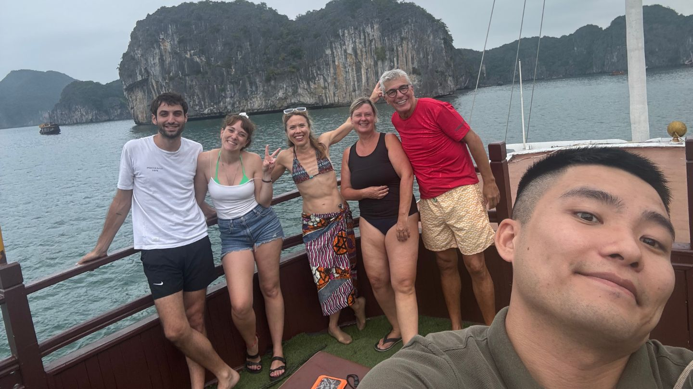

Joseph Hai
Guide francophone au Vietnam basé à Hanoï. Découvrez le Vietnam autrement grâce à des voyages privés, authentiques et personnalisés, loin des circuits touristiques classiques.
Planifier votre voyageQui est Joseph ?

Votre guide francophone au Vietnam
Passionné par les rencontres humaines, la culture vietnamienne et les découvertes locales, Joseph accompagne depuis plusieurs années des voyageurs francophones à travers tout le Vietnam.
Chaque voyage est conçu comme une expérience unique : comprendre le pays, rencontrer ses habitants, découvrir ses traditions et vivre le Vietnam de l’intérieur.
Basé à Hanoï, Joseph organise des circuits privés adaptés au rythme et aux envies de chaque voyageur.
Pourquoi voyager avec Joseph ?
Expert local
Une connaissance approfondie de l’histoire, de la culture vietnamienne et des régions authentiques du pays.
Voyages sur mesure
Chaque itinéraire est personnalisé selon vos centres d’intérêt, votre budget et votre rythme de voyage.
Accompagnement humain
Disponibilité avant, pendant et après votre séjour pour vous garantir une expérience fluide et sereine.
Destinations populaires
« Chaque voyage est une rencontre. Mon objectif n’est pas seulement de montrer le Vietnam, mais de vous faire vivre le Vietnam. »
Ce que disent les voyageurs
« Joseph est un guide exceptionnel, passionné et chaleureux. Grâce à lui, nous avons découvert Hanoï sous un angle authentique, entre histoire, culture et gastronomie locale. »
« Une expérience humaine inoubliable. Joseph sait transmettre son amour du Vietnam avec simplicité et enthousiasme. »
Contact
Joseph Hai – Avec Jo
Guide Francophone Vietnam
WhatsApp : +84 91 688 2795
Email : goavecjo@gmail.com
Site web : www.guidehanoi.com